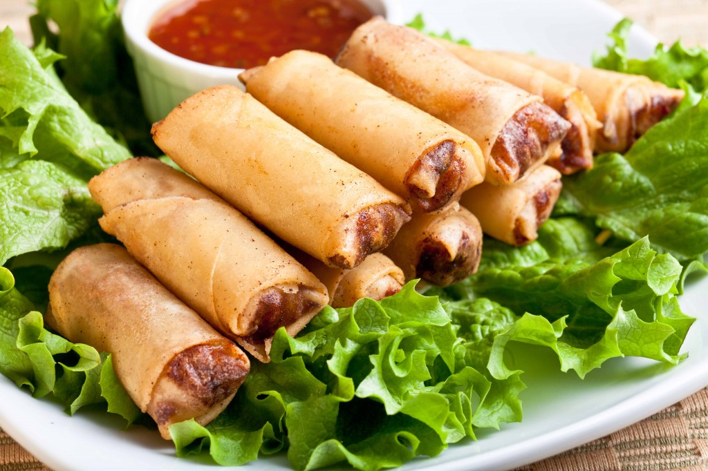

Lumpia, a type of spring roll, is made of thin paper-like or crêpe-like pastry skin called "lumpia wrapper" enveloping savory or sweet fillings. They are commonly found in Indonesian and Filipino cuisine.
Stuffing:
Steps:
Note: Careful not to overstuff or wrapper may tear or lumpia cook unevenly..